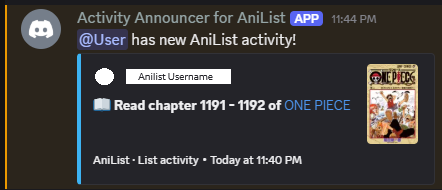
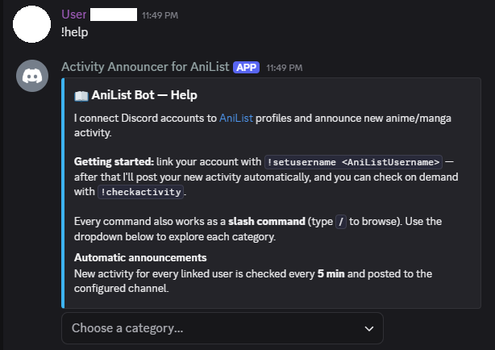
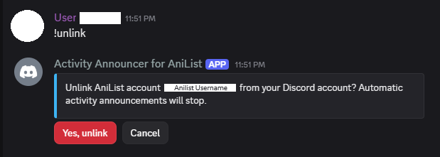

Personal project · 2026
AniList Discord Bot
A Discord bot that links Discord accounts to AniList profiles and posts new anime and manga activity as rich embeds, on a schedule or on demand. I rewrote my original single-file, synchronous bot into a modular async application with encrypted storage, a rate-limited API client, and automated tests.

Engineering decisions
What made it interesting
1Encryption without losing uniqueness
Stored AniList usernames are encrypted at rest with Fernet, so the database file alone doesn't reveal which Discord user is which AniList user. But encryption creates a problem: the same username encrypts differently every time, so the database can't check for duplicates. I solved it by storing a keyed HMAC-SHA256 fingerprint of each username next to the ciphertext and putting a UNIQUE constraint on the fingerprint. The database enforces "one AniList account per Discord user" without ever decrypting anything.
2Crash-safe delivery
Each user has a checkpoint in SQLite: the ID of the last activity announced. The checkpoint only moves forward after Discord confirms the message was sent. If the bot crashes mid-announcement, the worst case is one repeated message on restart, never a missed update. SQLite runs in WAL mode so reads and writes don't block each other.
3Being a good API citizen
The async GraphQL client uses a sliding-window rate limiter that caps traffic at 25 requests per minute, safely under AniList's current limit of 30. Transient failures retry up to 3 times with exponential backoff and respect the server's Retry-After header, and a 45-second response cache keeps repeated manual checks from spending API calls.
4Painless upgrades
On startup the bot detects the old bot's database schema and migrates it automatically, encrypting existing usernames along the way. I validated the migration against a copy of the real production database before switching over.
5Tested on every push
An offline test suite covers encryption round-trips, database CRUD, uniqueness enforcement, migration, activity parsing, embed rendering, and command registration. GitHub Actions runs it on Python 3.10 through 3.13 for every push.
In action
Commands and UI
Every command works as a slash command (/help) and a classic prefix command (!help). Destructive actions ask for confirmation first.


Architecture
How it's organized
The original bot was one synchronous file. The rewrite separates concerns so each piece can be tested on its own:
bot.py entry point, wiring, global error handling config.py environment loading and validation (fails fast) commands/ link, update, unlink, whoami, checkactivity, help services/ anilist.py async GraphQL client: rate limiting, retries, caching activity_monitor background loop that announces new activity database/db.py async SQLite: schema, migration, encrypted storage utils/ encryption, embeds, buttons, logging tests/ offline test suite (run in CI)
Trade-offs & next steps
What I'd improve
- Polling has a ceiling. The bot checks AniList every few minutes, and with a fixed rate limit, more users means a longer gap between checks. A larger deployment would need smarter scheduling, or push-based updates if the API offered them.
- At-least-once delivery. Crash safety comes at the cost of a rare duplicate announcement. For a notification bot that's the right trade; for something like payments it would need idempotency keys.
- Roadmap: a small web dashboard for linking accounts, per-server announcement channels, and notification preferences.